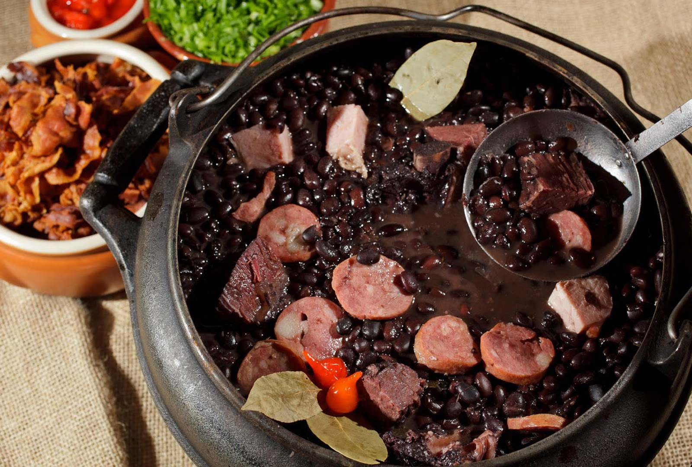

Culinária do Nordeste Brasileiro: Sabores que Contam Histórias
A culinária do Nordeste brasileiro é um verdadeiro festim de sabores e tradições, refletindo a riqueza da cultura local e a influência de diversas culturas, como indígena, africana e portuguesa. Aqui estão alguns aspectos marcantes dessa deliciosa tradição gastronômica:
Pratos tradicionais:
Feijoada Completa

A feijoada completa, embora seja mais associada ao sudeste, tem versões deliciosas no Nordeste, muitas vezes incorporando ingredientes regionais como carne de sol e paçoca de carne.
Carne de Sol com Mandioca

A carne de sol, típica da região, é frequentemente servida com mandioca cozida, formando um prato robusto e saboroso.
Baião de Dois

Uma mistura de arroz, feijão-verde, carne seca e queijo coalho, o Baião de Dois é uma explosão de sabores nordestinos.
Ingredientes Regionais
Coco
O coco é amplamente utilizado na culinária nordestina, seja em pratos doces como cocadas e quindins, ou em pratos salgados como a moqueca de peixe com leite de coco.
Azeite de Dendê
Presente em pratos típicos como o acarajé, o azeite de dendê confere um sabor único e coloração vibrante às preparações.
Pimenta
A pimenta é um ingrediente essencial para dar aquele toque de ardência característico da culinária nordestina. Molhos e temperos picantes são comuns em muitas receitas.